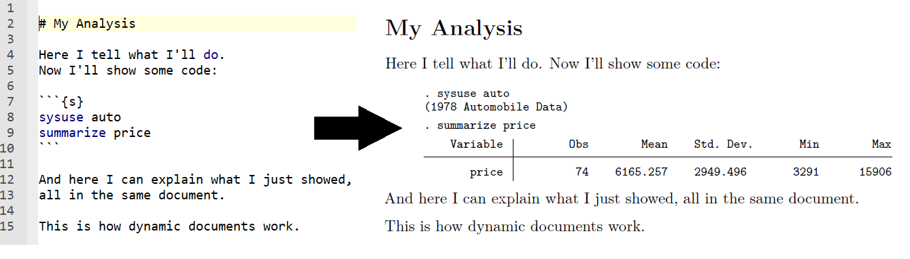

Outline
- Dynamic documents
markdownandmarkstatmarkstatinstallation- Including console output in documents
- Including graphs in documents
- Including tables in documents
- Including inline code in documents
- References and resources
Introduction
- What is a dynamic document?
In the context of this presentation, what we call a dynamic document is a document that contain both text and Stata outputs, where the outputs are updated automatically every time the script is run.
Introduction
- Why use dynamic documents?
Most tools for dynamic documents are created with literate data analysis in mind, where code and documentation is being produced together to increase research transparency.

Introduction
When to use dynamic documents?
- Include text and outputs in the same document – no more having to copy and paste figures, tables or plots to a document editor!
- Nice option for simple documents that don’t require a lot of formatting
- Can include code snippets or code examples in a document too
- Quickly visualize formatted tables
Introduction
Pros:
- Save time spent on copying and pasting or switching software
- Best option to include (and run) code in a document
Cons:
- Error messages may not be super clear (specially when using LaTeX)
- Harder to include detailed formatting
- No syntax highlighting for the text part in many editors (like the dofile editor), which makes it harder to debug text formatting
Introduction
- There are a handful of options for dynamic documents in Stata
- You can find a review of different options in this link
- For this presentation, we will use
markstat, as I believe it’s the most general and user friendly - At the end of this presentation, you can find some material on the different tools for dynamic documents in Stata
Introduction
markstat
- Stata command created by German Rodriguez
- Allows users to create and compile Stata markdown files by combining Stata code and markdown text
- Saves the outputs to PDF, word, HTML and beamer
Introduction
markstat
- Reads the Stata markdown file
- Separates (tangles) markdown and Stata code
- Runs each of them separately
- Puts their outputs back together (weaves) into a single document in the format you choose
Introduction
- Lightweight markup language
- Designed to be easily readable
- We won’t go into details about markdown in this session, but some resources are listed in the end of this presentation
- This session’s material includes a cheatsheet with everything you need to know to complete today’s exercises
Get the material
- Go to the session OSF page
- Download the file
Stata Markdown Materials.zip - Unzip the file in a location you can remember
Installation
Install the necessary programs
Installation
Find out where the programs are installed
pdflatex:- On Windows: open the command line and type
where pdflatex - On Mac or Linux: open the terminal and type
which pdflatex
- On Windows: open the command line and type
pandoc:- On Windows:
- WB computers: use the path where you unzipped Pandoc
- Non-WB computers: open the command line and type
where pandoc
- On Mac or Linux: on the terminal, type
which pandoc
- On Windows:
Stata setup
- Go to the location where you unzipped the file
Stata Markdown Materials.zip - Open
Master.do
Stata setup

Stata setup
- Paste the location of pdflatex to the line that starts with
whereis pdflatex- Example: “C:/Program Files/MiKTeX 2.9/miktex/bin/x64/pdflatex.exe”
- On Windows: Make sure to include the
.exefile extension
- Paste the location of Pandoc to the line that starts with
whereis pandoc- Example: “C:/WBG/pandoc-2.11.4/pandoc.exe”
- Make sure all the locals in
PART 0are equal to 1 - Run
Master.do
markstat
The command that creates the final document is
markstat
markstat using filename,
[pdf docx slides beamer mathjax
bibliography strict nodo nor keep]markstat
In our case, we used:
markstat using stata-markdown-template, pdfstata-markdown-template is the file with the extension
.stmd you will find in the materials folder.
It contains the Markdown and Stata code we just rendered to a
pdf file using markstat.
Try opening it in the do-file editor to see how its content relates to the file generated.
markstat
Exercise 1:
Test different output formats for
Stata markdown template by specifying on master:
markstat using "${mdfolder}/stata-markdown-template", pdfmarkstat using "${mdfolder}/stata-markdown-template", docxmarkstat using "${mdfolder}/stata-markdown-template", slidesmarkstat using "${mdfolder}/stata-markdown-template", beamer
markstat
Here are some notes on Exercise 1:
Go to
markstatwebsite to see how to change the slides themeOn beamer, slides with Stata code or output need to be in the fragile style. It can be set like this:
# Slide title {.fragile}- You might have noticed that the materials folder contains a file
named
stata.sty. This file is necessary to render Stata Markdown code in PDF, and it should be placed in the same folder as your.stmdfile
markstat
In some systems, you will not be able to replace the PDF if it’s open. There are two possible solutions:
Close the PDF file before running
markstat; orClose the PDF file once you get an error message and press enter on the command window
markstat
- Writing markdown in Stata with
markstatis simple, and similar to what would be done inR - Check the file called
Stata markdown template.stmdon your Do-file editor to see how it works - To write text, write markdown without indentation
- Check
Resources/markdown-cheatsheet.stmdfor examples of how to format text using markdown
Including Stata code
- The simplest way to write Stata code is start a line with four spaces or one tab:
This is regular text
Hello world!
*This is Stata:
sysuse auto, clearIncluding Stata code
- You can also use fenced code blocks (as the one below)
- They make the
.stmdfile harder to read, but allow you to use more advanced options – we’ll see some examples soon
Write text without indentation
```{s}
* Write stata code inside chunks
sum mpg
```Including Stata output
Exercise 2:
- Under the second title in
Stata markdown template.stmd, add Stata code using a command that prints some output to the Stata window (summarize,keep,genandtabare good examples) - Save the markdown file
- If you have a PDF open, close it
- Open
Master.do - Set the
packagesandpathslocals to0 - Run
Master.do
Including Stata output
```{s}
* Summary of miles per gallon
sysuse auto,clear
sum mpg
```. * Summary of miles per gallon
. sysuse auto, clear
(1978 automobile data)
. sum mpg
Variable │ Obs Mean Std. dev. Min Max
─────────────┼─────────────────────────────────────────────────────────
mpg │ 74 21.2973 5.785503 12 41
Including Stata graphs
To include Stata graphs:
- Create the graphs in Stata
- Save it locally using
graph export - Use the following markdown syntax to include the graph:

Including Stata graphs
```{s}
scatter weight length, ///
legend(off)
graph export scatter.png, width(800) replace
```
Including Stata graphs
Exercise 3
- Go to
Stata markdown template.stmd - Create and export a graph using the loaded data (you can use the
command
scatter, for example) - Include markdown code to display the graph you just saved
- Save the markdown file
- If you have a PDF open, close it
- Run
Master.do
Including Stata graphs
. scatter weight length, /// > legend(off) . graph export scatter.png, width(800) replace file scatter.png saved as PNG format
Correlation between weight and length
Omitting Stata code
- Depending on the type of document you are writing, you may want to only display the results of your code (tables, graphs, etc)
- This is when using strict code blocks is useful
- To omit the Stata code from the document, type
{s/}on the opening of your code chunk
Omitting Stata code
```{s/}
scatter weight length, ///
legend(off)
graph export scatter.png, width(800) replace
```
Omitting Stata code
file scatter.png saved as PNG format
Correlation between weight and length
Omitting Stata output
- Now, the last slide probably wasn’t exactly what you were expecting, right?
- Using
{s/}will omit the code you used, but not the messages it generated - To omit any message, simply run your code
quietly
Omitting Stata output
```{s/}
scatter weight length, ///
legend(off)
quietly graph export scatter.png, width(800) replace
```
Omitting Stata output
Correlation between weight and length
Including math notation
- To include math notation, such as equations, you can use LaTeX notation
markstatwill read anything inside dollar signs ($) as LaTeX math notation- You can find resources on LaTeX math notation here
$$
Y = \alpha + \beta_{1} X_{1} + \beta_{2} X_{2} + \ldots + \beta_{n} X_{n} + \epsilon
$$Y = α + β1X1 + β2X2 + … + βnXn + ϵ
Including Stata tables
- To include estimation results, we recommend using
esttab - The window output of
esttabis well-formatted, and including that output is the simplest way to display a table esttabalso exports to HTML and TeX, but those are more advanced examples that are beyond the scope of this presentation- You can find more detailed examples in the Stata Markdown website
- For a demo of how to use
esttabto customize tables, go to this repository
Including Stata tables
```{s/}
qui reg price headroom
est sto reg1
qui regress price headroom trunk
est sto reg2
qui regress price headroom trunk foreign
est sto reg3
esttab reg1 reg2 reg3, ///
replace ///
label se ///
nomtitles
```Including Stata tables
────────────────────────────────────────────────────────────────────
(1) (2) (3)
────────────────────────────────────────────────────────────────────
Headroom (in.) 399.2 -580.8 -519.7
(408.2) (519.5) (516.9)
Trunk space (.. ft.) 292.8** 328.4**
(102.8) (104.7)
Car origin 1128.8
(763.2)
Constant 4970.3*** 3875.9** 2866.9*
(1269.0) (1270.0) (1432.4)
────────────────────────────────────────────────────────────────────
Observations 74 74 74
────────────────────────────────────────────────────────────────────
Standard errors in parentheses
* p<0.05, ** p<0.01, *** p<0.001
Including Stata tables
Exercise 4
- Go to
Stata markdown template.stmd - Inside a Stata code block, run a few simple regressions on the loaded data
- Use
esttabto output the regression results - Save the markdown file
- If you have a PDF open, close it
- Run
Master.do
Including code inline
- Sometimes we want to reference numbers in our text
- If the numbers change for any reason, it’s better to have them automatically updated than review the whole presentation for adjustments
- Markdown lets you write code inline with your text
Including code inline
- Writing
Today is `s c(current_date)`.- Will result in
Today is 15 Dec 2023.
Including code inline
Exercise 5
Using inline Stata code, try to include the following items to your current markdown file:
- The sample includes 74 different car models
- 22 are foreign models, and 52 are domestic
Including code inline
```{s}
qui count
local models `r(N)'
qui count if foreign == 1
local foreign `r(N)'
qui count if foreign == 0
local domestic `r(N)'
```Including code inline
+ The sample includes `s `models'` different car
models
+ `s `foreign'` are foreign models, and `s `domestic'`
are domesticThis results in:
- The sample includes 74 different car models
- 22 are foreign models, and 52 are domestic
Including code inline
- Inline code is particularly useful when you want to display a custom table
- You can create the table using markdown, and add the numbers to the right columns using locals
- However, to create these you need to specify the
strictoption when compiling - And they will not necessarily render will in all different formats
Including code inline
- Writing
| Car origin | N obs |
|:------------|-------------:|
| Domestic |`s `domestic'`|
| Foreign |`s `foreign'` |- Will result in
| Car origin | N obs |
|---|---|
| Domestic | 52 |
| Foreign | 22 |
Annex: Adding a title to your document
- There are three pieces of metadata that you can easily add to your document: title, author and date
- You can do this by adding the following code to the beginning of your document:
% Document Title
% Author
% DateAnnex: Other tools for dynamic documents in Stata
- Stata package created by Ben Jann
- Write LaTeX code instead of markdown
- The markdown file is not as easy to read
- But can be easier to format, if you know TeX well
- Debugging LaTeX errors can be hard
Annex: Other tools for dynamic documents in Stata
- Tools built-in Stata 15 or newer versions
dyndoc: create Word or HTML files from Markdownputpdf: create PDF files- Syntax is different for different output formats
- Syntax is unique to these commands
- The markdown file is not as easy to read
Annex: Other tools for dynamic documents in Stata
- E.F Haghish has a few different commands for dynamic documents in Stata.
- This presentation is great introduction to them
- Translates log files to Markdown, doc, LaTeX, HTML, epub and a number of other formats
- Real-time preview of the document
Annex: Other resources
- This presentation was mostly based on German Rodriguez, 2017. “MARKSTAT: Stata module to support literate data analysis using Stata and Markdown,” Statistical Software Components S458401, Boston College Department of Economics, revised 08 May 2018.
- The
markstatwebsite contains a lot of material, examples and FAQs